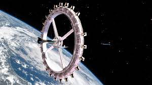

Así será el primer hotel espacial del mundo, que espera abrir en 2027,
resumen: La noticia nos cuenta que en el 2027 se creara el primer hotel espacial este cuenta con zona de restaurantes, las diferentes habitaciones y con ascensores cuyo uso es el fácil desplazamiento entre las diferentes partes del hotel. El nombre de este hotel será Hotel Voyager. Para finalizer ester Proyecto va ser dirigido por la empresa Orbital Assembly Corporation, dirigida a su vez por la compañía Gateway Foundation de California. La función de este hotel es poder vivir en el espacio y este hará lo mismo que la luna orbitara alrededor de la tierra. No se ha anunciado el costo de las habitaciones pero se espera que serán precios elevados.
Nombre: Thomas Alejandro Vargas Blanco
Curso: 11°